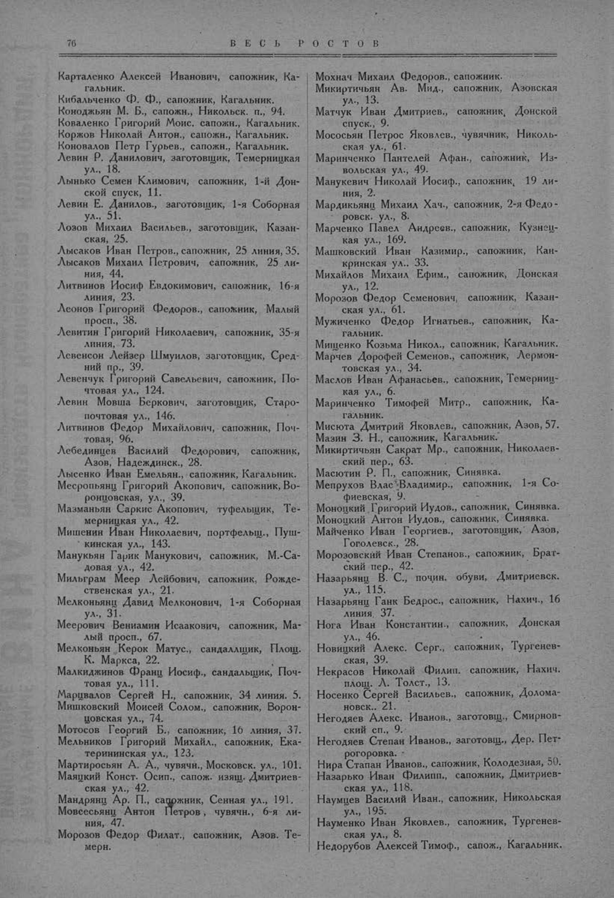

Лист источника 126
Скан

Распознанный текст
76 В Е С Ь Р О С Т О В
Карталенко Алексей Иванович, сапожник, Ка-
гальник.
Кибальченко Ф. Ф., сапожник, Кагальник.
Коноджьян М. Б., сапожн., Никольск. п., 94.
Коваленко Григорий Моис. сапожн., Кагальник.
Коржов Николай Антон., сапожн., Кагальник.
Коновалов Петр Гурьев., сапожн., Кагальник.
Левин Р. Данилович, заготовщик, Темерницкая
ул., 18.
Лынько Семен Климович, сапожник, 1-й Дон-
ской спуск, 11.
Левин Е. Данилов., заготовщик, 1-я Соборная
ул., 51.
Лозов Михаил Васильев., заготовщик, Казан-
ская, 25.
Лысаков Иван Петров., сапожник, 25 линия, 35.
Лысаков Михаил Петрович, сапожник, 25 ли-
ния, 44.
Литвинов Иосиф Евдокимович, сапожник, 16-я
линия, 23.
Леонов Григорий Федоров., сапожник, Малый
просп., 38.
Левитин Григорий Николаевич, сапожник, 35-я
линия, 73.
Левенсон Лейзер Шмуилов, заготовщик, Сред-
ний пр., 39.
Левенчук Григорий Савельевич, сапожник, По-
чтовая ул., 124.
Левин Мовша Беркович, заготовщик, Старо-
почтовая ул., 146.
Литвинов Федор Михайлович, сапожник, Поч-
товая, 96.
Лебединцев Василий Федорович, сапожник,
Азов, Надеждинск., 28.
Лысенко Иван Емельян., сапожник, Кагальник.
Месропьянц Григорий Акопович, сапожник, Во-
ронцовская, ул., 39.
Мазманьян Саркис Акопович, туфельщик, Те-
мерницкая ул., 42.
Мишенин Иван Николаевич, портфельщ., Пуш-
кинская ул., 143.
Манукьян Гарик Манукович, сапожник, М.-Са-
довая ул., 42.
Мильграм Меер Лейбович, сапожник, Рожде-
ственская ул., 21.
Мелконьянц Давид Мелконович, 1-я Соборная
ул., 31.
Меерович Вениамин Исаакович, сапожник, Ма-
лый просп., 67.
Мелконьян Керок Матус., сандальщик, Площ.
К. Маркса, 22.
Малкиджинов Франц Иосиф., сандальщик, Поч-
товая ул., 111.
Марцвалов Сергей Н., сапожник, 34 линия, 5.
Мишковский Моисей Солом., сапожник, Ворон-
цовская ул., 74.
Мотосов Георгий Б., сапожник, 16 линия, 37.
Мельников Григорий Михайл., сапожник, Ека-
терининская ул., 123.
Мартиросьян А. А., чувячн., Московск. ул., 101.
Маяцкий Конст. Осип., сапож. изящ. Дмитриев-
ская ул., 42.
Мандрянц Ар. П., сапожник, Сенная ул., 191.
Мовсесьянц Антон Петров, чувячн., 6-я ли-
ния, 47.
Морозов Федор Филат., сапожник, Азов. Те-
мерн.
Мохнач Михаил Федоров., сапожник.
Микиртичьян Ав. Мид., сапожник, Азовская
ул., 13.
Матчук Иван Дмитриев., сапожник, Донской
спуск., 9.
Мососьян Петрос Яковлев., чувячник, Николь-
ская ул., 61.
Маринченко Пантелей Афан., сапожник, Из-
вольская ул., 49.
Манукевич Николай Иосиф., сапожник, 19 ли-
ния, 2.
Мардикьянц Михаил Хач., сапожник, 2-я Федо-
ровск. ул., 8.
Марченко Павел Андреев., сапожник, Кузнец-
кая ул., 169.
Машковский Иван Казимир., сапожник, Кан-
кринская ул., 33.
Михайлов Михаил Ефим., сапожник, Донская
ул., 12.
Морозов Федор Семенович, сапожник, Казан-
ская ул., 61.
Мужиченко Федор Игнатьев., сапожник, Ка-
гальник.
Мищенко Козьма Никол., сапожник, Кагальник.
Марчев Дорофей Семенов., сапожник, Лермон-
товская ул., 34.
Маслов Иван Афанасьев., сапожник, Темерниц-
кая ул., 6.
Маринченко Тимофей Митр., сапожник, Ка-
гальник.
Мисюта Дмитрий Яковлев., сапожник, Азов, 57.
Мазин З. Н., сапожник, Кагальник.
Микиртичьян Сакрат Мр., сапожник, Николаев-
ский пер., 63.
Масютин Р. П., сапожник, Синявка.
Мепрухов Влас Владимир., сапожник, 1-я Со-
фиевская, 9.
Моноцкий Григорий Иудов., сапожник, Синявка.
Моноцкий Антон Иудов., сапожник, Синявка.
Майченко Иван Георгиев., заготовщик, Азов,
Гоголевск., 28.
Морозовский Иван Степанов., сапожник, Брат-
ский пер., 42.
Назарьянц В. С., почин. обуви, Дмитриевск.
ул., 115.
Назарьянц Гаик Бедрос., сапожник, Нахич., 16
линия, 37.
Нога Иван Константин., сапожник, Донская
ул., 46.
Новицкий Алекс. Серг., сапожник, Тургенев-
ская, 39.
Некрасов Николай Филип. сапожник, Нахич.
площ. Л. Толст., 13.
Носенко Сергей Васильев., сапожник, Долома-
новск., 21.
Негодяев Алекс. Иванов., заготовщ., Смирнов-
ский сп., 9.
Негодяев Степан Иванов., заготовщ., Дер. Пет-
рогоровка.
Нира Стапан Иванов., сапожник, Колодезная, 50.
Назарько Иван Филипп., сапожник, Дмитриев-
ская ул., 118.
Наумцев Василий Иван., сапожник, Никольская
ул., 195.
Науменко Иван Яковлев., сапожник, Тургенев-
ская ул., 8.
Недорубов Алексей Тимоф., сапож., Кагальник.